Bridging the gap between wanting solar and adopting it.
Role
Designer: research, synthesis, service and brand design
Mentor
Aditya Shahakar, UPES Dehradun
Timeline and methods
Oct – Nov 2026: desk research, benchmark, 13 interviews, thematic coding
Overview
Subsidies, loans and installers are easier to reach than ever, yet most interested homeowners in India never take the first step. WattWise looks at why, and proposes a neighbourhood service that helps them decide for their own home: a Solar Clinic van, a take-home Solar Card and a web companion.
The case study follows one day of sunlight: research at dawn, definition at noon, design at dusk.
Area of enquiry
What stops interested homeowners from moving toward rooftop solar, and what can we learn from people who already made the journey?
Interest in rooftop solar is high, but few homeowners act on it.
CEEW surveyed 17,094 Indian households on how they decide about rooftop solar. The money and the scheme exist. The first step doesn’t.
71%of interested households hadn’t started adopting
68%of aware, interested households didn’t know how to begin
3.0Sun size = households stuck at that stage. Tap a sun. A simplified journey, not the official procedure.Interactive, from interviews
Same Sun, Different Roofs
A bigger bill doesn’t decide who installs
{{ h.bill }}
{{ h.id }}
3.1House height = peak monthly bill (upper end, approx.). 9 of 13 peak between ₹4k and ₹7k; the two smallest bills both stalled.From interviews
From 13 stories to seven themes
I coded every interview, then grouped the codes into themes. Two themes cut across both groups: knowing the roadmap, and knowing who stands behind it.
Seven RaysOne bead per household. Filled = main issue, outlined = raised
{{ r.t }}{{ r.name }}{{ b.id }}{{ r.count }}
4.027 person-theme links across 13 people. One coder’s judgement; counts show patterns, not prevalence.Thematic analysis
Central insight
Homeowners don’t need more solar information. They need to know what it means for their own decision.
Adopters were tipped over by a person or a moment: a neighbour’s visible install, a loan that fit the monthly budget.
Noon: Define
One roof, many decisions.
Where, why and for whom should WattWise step in?
Two homeowners, two perspectives
One persona for the seven who hadn’t installed, one for the six who had. Both are syntheses, not individual participants.
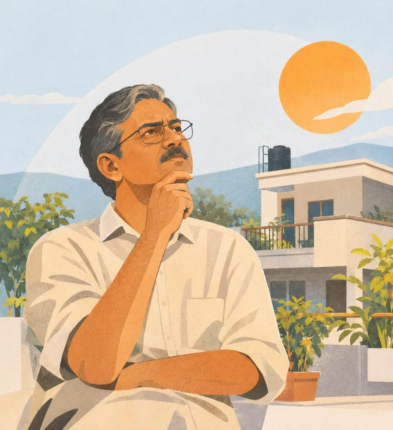
Primary: interested non-adopter
The Cautious Evaluator
“I want solar, but I need to know whether it’s the right decision for my home.”
Success looks like: explaining the costs, risks and next step to their family, even if the decision is to wait.
Evidence: N1–N7
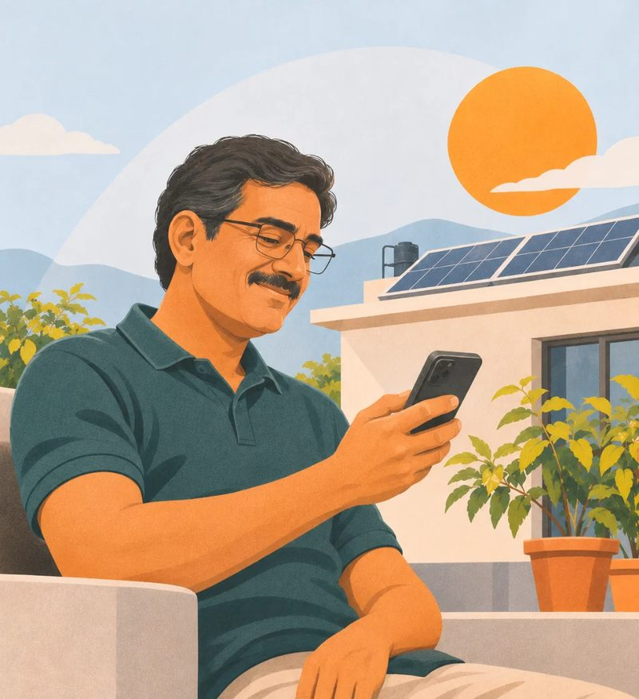
Supporting: recent adopter
The Assisted Adopter
“The system works, but I wish I’d known exactly what to expect along the way.”
Success looks like: a predictable installation, understandable bills, and knowing whom to call when it slips.
Evidence: A1–A6
The moments that need help come just before money changes hands
Non-adopter journeyStuck before committing
6 of 7 stalled in the early stages, over suitability, affordability, trust or household agreement.
Adopter journeySnagged after signing
5 of 6 hit friction at installation or later: scope, subsidy timing, crew, schedule or billing.
01Before asking for a quoteIs this even worth looking into for my roof?
02Before committing moneyWhat will it really cost, and when does the subsidy arrive?
03Before installationWhat’s included, and who do I call when it slips?
One homeowner depends on many others
No single organisation runs the experience. Position shows how closely each party deals with the homeowner, not how much power it holds.
Homeownermakes the decision
{{ e.name }}
5.0Primary, secondary and tertiary rings around the homeownerStakeholder map
System-level tension
The homeowner makes the final decision, but the information needed to make it is spread across other stakeholders.
No single accountable guide
Information arrives too late
Personal relevance is hard to establish
Three systemic weaknesses, from a preliminary service blueprint.
The most mentioned problem isn’t always the right one to design for
Problem territoryParticipantsPossible UX roleMain constraint
{{ r.name }}{{ r.n }}{{ r.ux }}{{ r.con }}
6.0Mention counts, not impact scores. Post-installation billing was deferred: a later stage, dependent on DISCOM systems.Prioritisation
Primary problem territory
Decision confidence before solar adoption
Why here, 1
6 of 7 interested households stalled before committing. Later support would never reach them.
Why here, 2
The two widest themes, roadmap and installer trust, first bite while comparing quotes.
Why here, 3
Adopters’ late surprises, like A3’s subsidy timing, become early warnings for everyone else.
How might we
help solar-interested homeowners evaluate rooftop solar for their own circumstances and make an informed, confident decision before committing?
{{ p.n }}{{ p.t }}{{ p.d }}
Five design principles. The fifth matters most: a good outcome can be deciding not to install.
Dusk: Design
Bringing solar confidence to your neighbourhood.
What if homeowners could ask their solar questions in person, close to home?
A rooftop revolution, one neighbourhood at a time
The schemes and subsidies are in place. What’s missing on the ground is confidence. WattWise invites every household into the transition, at its own pace and with its own questions.
The national goal
1 crore
homes with rooftop solar: the target of PM Surya Ghar: Muft Bijli Yojana (2024).
The campaign
Har Chhat, Ek Nayi Soch.
हर छत, एक नई सोच।
Every roof, a new way of thinking. Going solar becomes something a neighbourhood does together, and WattWise is how one household joins in.
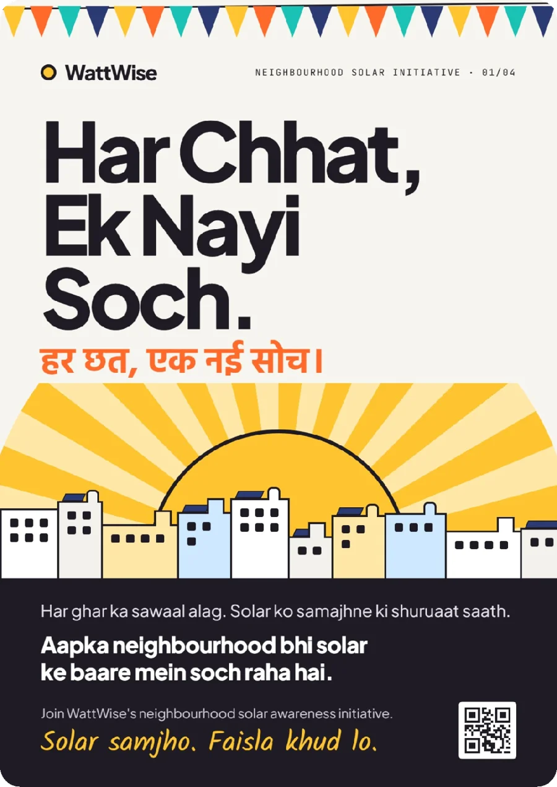
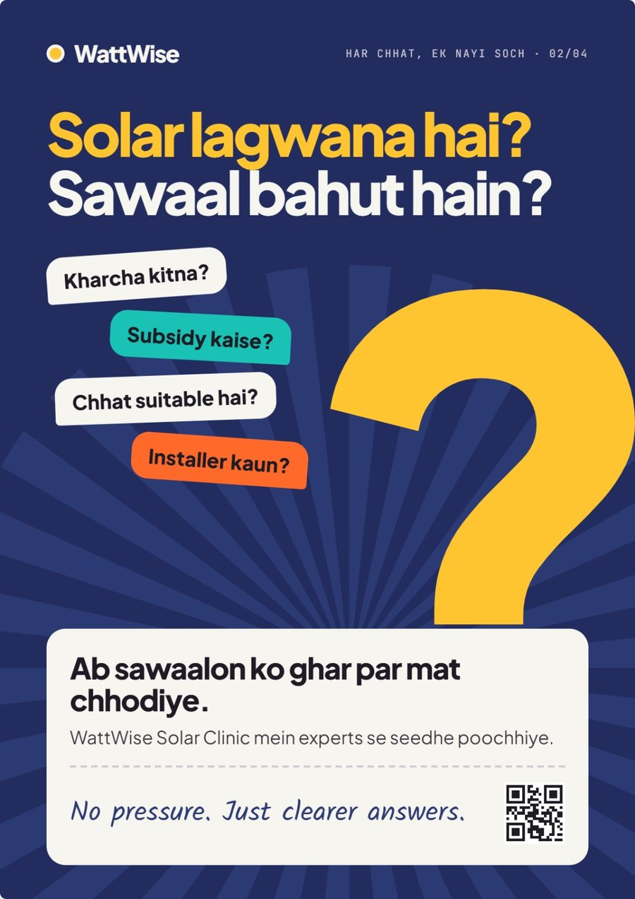
Ghar, householdOne family understands solar and decides for itself.
Mohalla, neighbourhoodNeighbours see a working rooftop, ask questions, and follow.
Desh, countryRooftop by rooftop, the decisions add up to a national transition.
Four directions before one service
A SCAMPER session produced 14 ideas, grouped by how they would deliver help, then scored against the Define principles.
{{ c.n }}Selected
{{ c.name }}{{ c.d }}
{{ c.score }} / 15
{{ c.kept }}
7.0My qualitative scoring during ideation (1–3 per criterion), not a user-tested result.Concept selection
The reasoning, in one chain
A digital guide alone wasn’t enough: interviewees moved forward when a person helped. So the help became human and local. To keep it affordable, a personalised report became one universal card, and a web companion carries the conversation home.
A moving space for questions, not a sales showroom
A van that parks where people already are. A live demo on one side, an adviser desk on the other, and no commitment asked for.
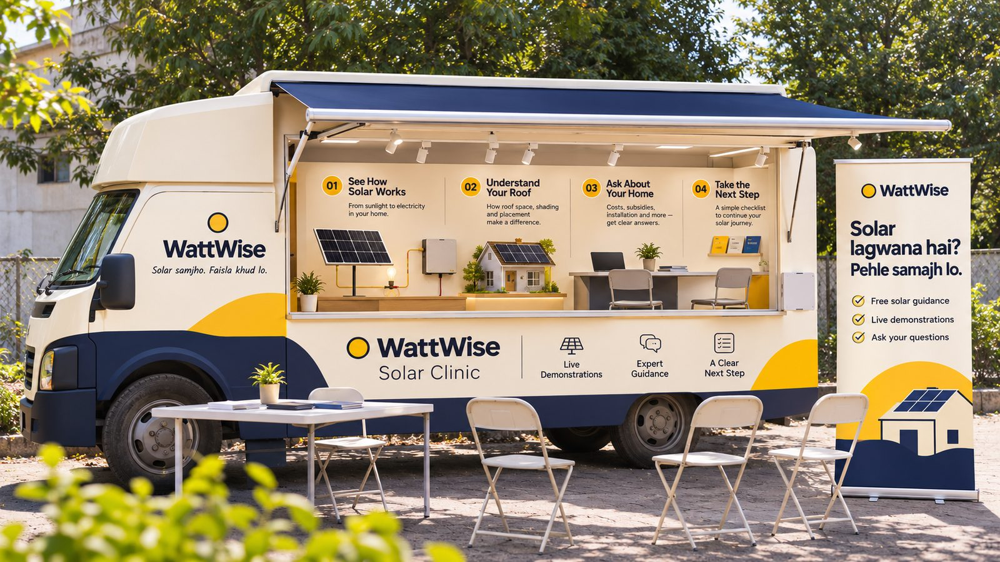
Concept render
8.0“Solar samjho. Faisla khud lo.” Understand solar. Make your own decision.Service concept
01See how solar worksPanel, inverter and bulb show sunlight becoming electricity.
02Understand your roofA model house shows how space and shade change what’s possible.
03Ask about your homeAn adviser talks through bills, budget, subsidy and installers.
04Take the next stepThe adviser ticks a topic on a Solar Card and hands it over.
Existing solar vans“Here’s the scheme.”Information about subsidies and how to join.
WattWise“Is solar right for my home?”Starts from the household’s question. Ends with a marked next step. Waiting is a valid outcome.
Operator transparency: who runs the van, and any commercial referrals, is disclosed on the van itself.
One service, with four touchpoints that hand you on
Three physical, one digital. Each one passes the homeowner to the next, so nothing depends on remembering where to look.
{{ t.kind }}{{ t.name }}{{ t.d }}→ {{ t.next }}
{{ f.n }}{{ f.t }}{{ f.d }}
9.0Yellow = physical, teal = digital, white = the homeowner’s own decisionHow the touchpoints connect
A reminder that stays after the van leaves
A personalised report would cost too much per visitor. One pre-printed A6 card does the job: a reminder on the front, a checklist the adviser marks in seconds on the back.
1
Consultation
The homeowner talks through their concerns.
2
Mark the card
The adviser ticks one or two topics and writes a next action.
3
Take it home
Something physical to share with the family.
4
Continue digitally
One universal QR opens the web companion; they pick the ticked topic.
Low effort
A tick takes seconds. No typing or printing.
Low cost
One design, printed in bulk.
Continuity
Links the van to guidance at home.
The card doesn’t certify eligibility, guarantee savings or replace a professional assessment.
Everything you need, without the overload
A mobile-first website, not a solar marketplace. It opens from a poster or card QR, needs no download or sign-up, and stores nothing about the visit.
Home
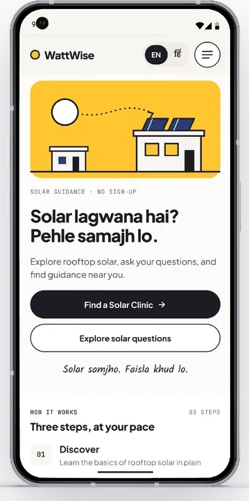
Find a clinic
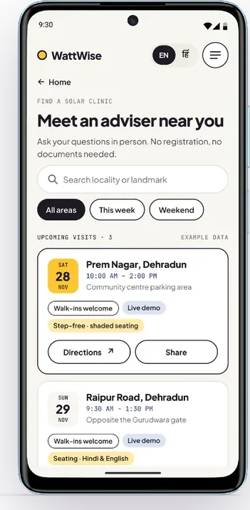
Continue from card
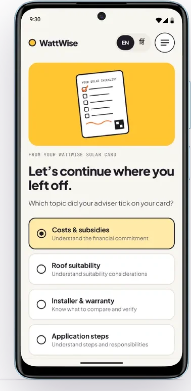
10.0Concept screens with example data. English / Hindi toggle on every screen.Mobile web
Plain languageHindi + EnglishLow data use✓ Verified links to official sources
Three moments, including when things don’t go to plan
{{ s.n }}{{ s.t }}{{ s.d }}
When it doesn’t go to plan{{ momentSel.failT }}{{ momentSel.failD }}
Warm enough to approach. Clear enough to trust.
The posters, van, card and web share one sun mark and a Hinglish voice, so a resident who sees one recognises the rest. The posters were the one piece I could test in the street.
WattWise
Solar samjho. Faisla khud lo.
{{ p.name }} {{ p.hex }}
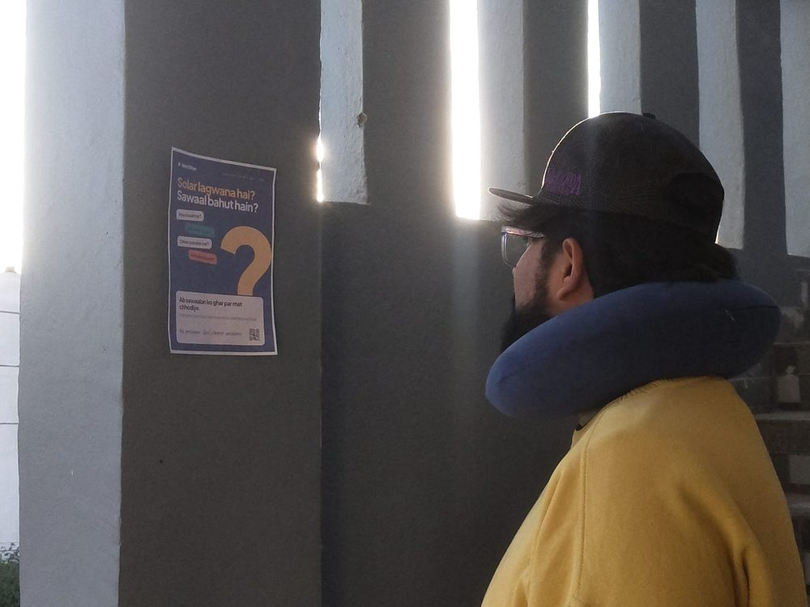
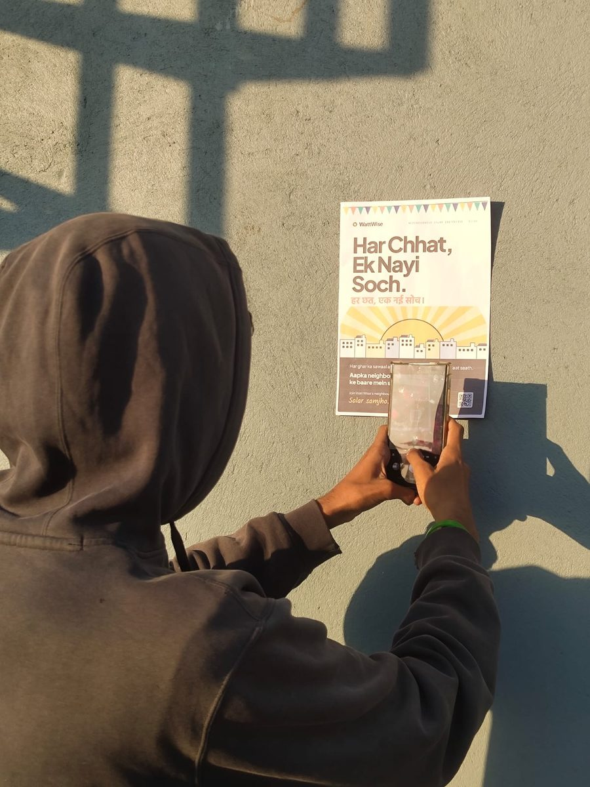
11.0The campaign posters, printed and put up on walls and pillars.On the street
Tested on the street
5/7preferred the two campaign posters over the plain variants
Seven people saw the printed posters in place. People stopped to read the questions, and scanned the QR.
Informal preference test with 7 people, so the result is only indicative.
Earlier variants
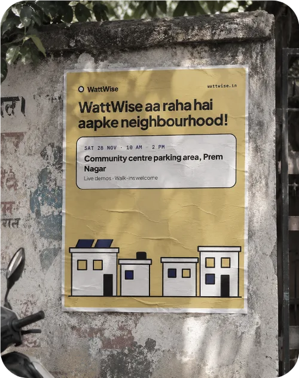
Plain yellow
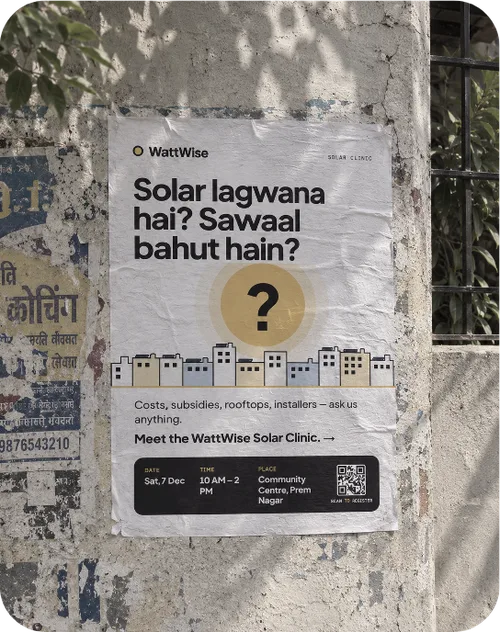
Plain white
Every hand-off now leaves something in hand
In Define, confidence dipped at every hand-off. Compare the journey before and after.
{{ jTitle }}
MORE CONFIDENTLESS CONFIDENT
{{ l.n }}{{ l.t }}{{ l.d }}
12.0Illustrative confidence curves: inferred from interviews (as-is) and design intent (to-be). Neither is measured.Interactive
What WattWise aims to change, and what it can’t claim yet
FunctionalClearer costs, requirements and next steps
EmotionalConfidence through transparent, trusted help
SocialEasier household conversations
EnvironmentalAdoption where it’s appropriate and feasible
Intended outcomes, not achieved results. The concept doesn’t establish more installations, savings or emissions cuts.
A small, home-owning sampleRenters, apartment dwellers and abandoned installs aren’t represented.
Imperfect interview dataSome questions were skipped; three are interviewer summaries; bills were ranges.
No service blueprint validationThe backstage needs research with installers, banks and DISCOM staff.
Only the posters were tested with peopleAn informal test with 7. The clinic, card and web companion are untested concepts.
Non-negotiable service standardsClear informationQualified guidanceTransparent limitationsVoluntary participation